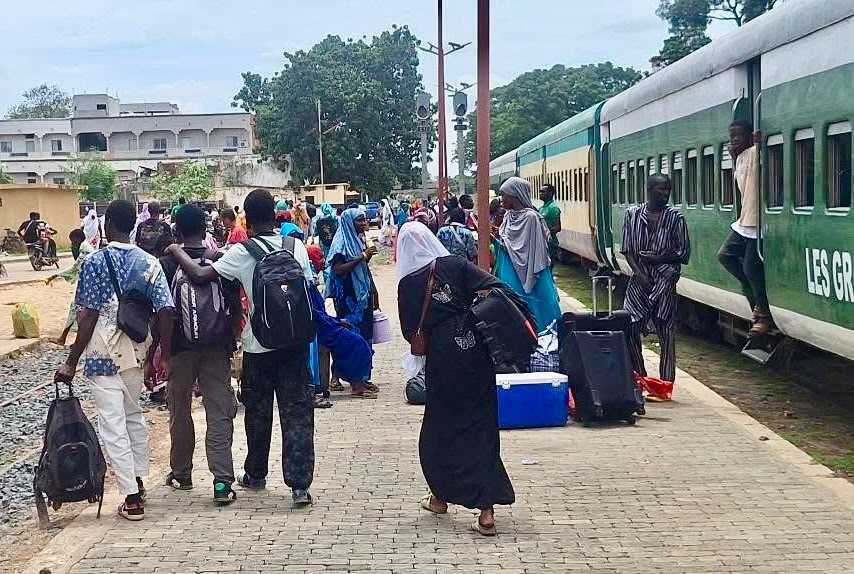
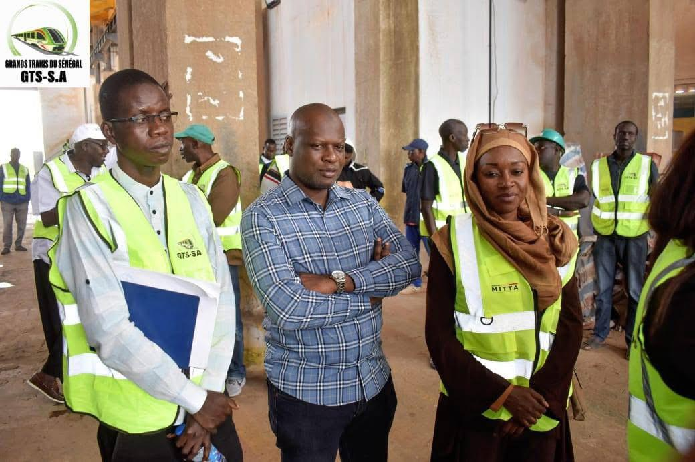
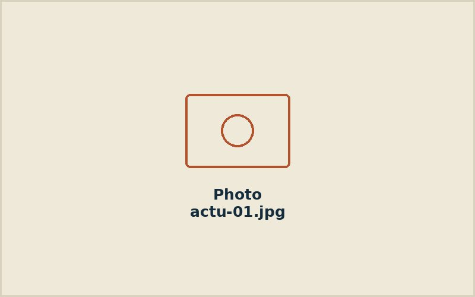

Projet TMN (Touba Mbacke Ngabu)
Embarquement du train
Un nouveau service quotidien vient renforcer la liaison Touba–Mbacké–Ngabou afin de mieux desservir les élèves et les populations.
Actualités
Les dernières nouvelles du réseau, de nos partenariats et de nos chantiers de modernisation.

Projet TMN (Touba Mbacke Ngabu)
Un nouveau service quotidien vient renforcer la liaison Touba–Mbacké–Ngabou afin de mieux desservir les élèves et les populations.

Partenariat technique
Un accord de coopération élargit l'accompagnement sur la modernisation des ateliers et de la signalisation.

Magal Touba
Contractualisation d'un partenariat pour la sécurité des gares et des trajets voyageurs.

Ligne Thiès–Touba
Un nouveau service quotidien vient renforcer la liaison interurbaine vers le Baol.